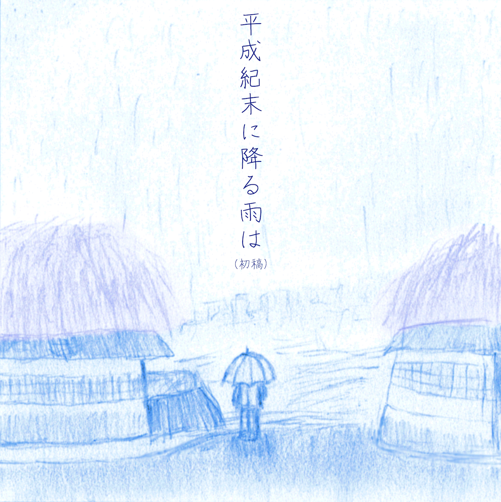

Product Name
Auther(Group) Name
YYYY/MM/DD Release
(C)YYYY Auther(Group) with C-Sound Creations

収録内容
- Track Name
- Track Name
CD版 (FTCS-NNNNN)
iTunes Store(インスト版含むパッケージ)
SoundCloud(手悟群 翔アカウント, ボーカル版のみ)
bandcamp(当レーベル公式, インスト版含むパッケージ)
and more...
ダウンロード版 (FTDS-NNNNN)
iTunes Store(インスト版含むパッケージ)
SoundCloud(手悟群 翔アカウント, ボーカル版のみ)
bandcamp(当レーベル公式, インスト版含むパッケージ)
and more...